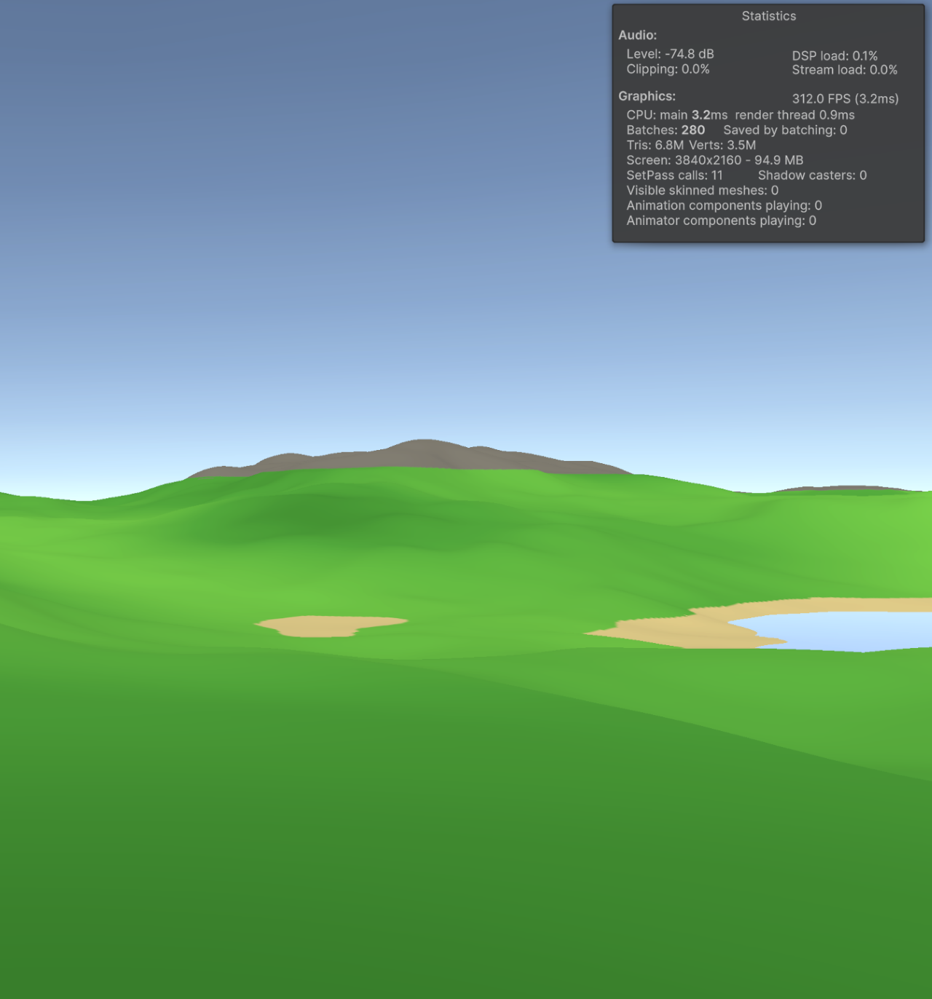
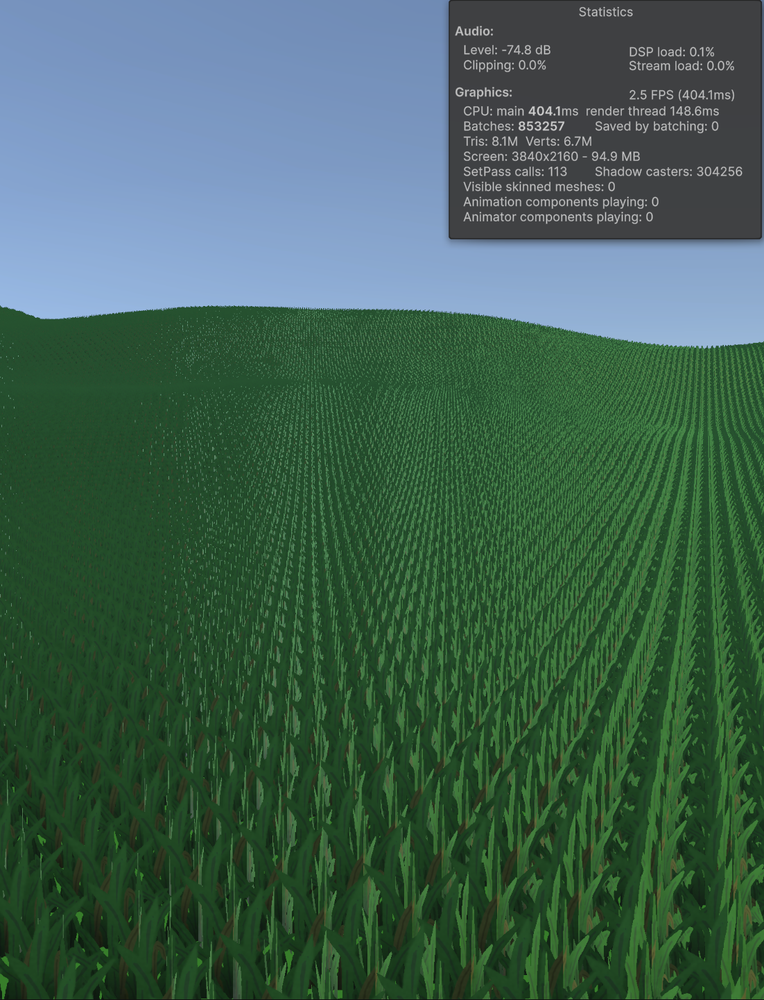

Opening Remarks
As promised, here's the second week's devlog for First Settlers. A high level summary of this week's progress is as follows: mesh generation blockiness was improved (meaning reduced) dramatically. LOD has improved tremendously. Seams across chunks are now minimally noticable. Visuals have improved with a custom shader, and grass rendering is underway (though in its infancy thus far).
If you are interested in the specifics along with accompanying graphics, keep reading!
Height Map Design
When procedurally generating terrain, a mesh must be generated for each chunk and the surface must be carved into the desired terrain surface shape. For land, including the base grass/ground, mountains, and any other solid footing spaces, the mesh directly follows a height map which is defined as a function of world seed. This height map is a function of several variables, including the mountain mask, river mask, and other independent noise-based scalar values.
In formulating the height map, octave offsets must be generated to shift the 2-D noise space for each fractal layer sampled. Originally, as part of a tutorial by Sebastian Lague, the octave offset values were randomly sampled between -100,000 and 100,000. We had arbitrarily used the same values, but we also modified the mesh height multiplier, which exacerbated discontinuities in the terrain unseen in the tutorial series. With a mesh height multiplier of 200, there was evident piecewise terracing shapes on all slopes, which gave the world a voxel-like look, especially evident in terrain features like rivers, as seen below.

The terracing/blocky look is visible on the rock surface in the picture above. We initially thought the problem lied in the noise function itself, and the fact that over discrete integer samples, the linear interpolation between points gave it such a look. However, upon closer inspection, we noticed the terracing actually reduced in height and then increased, between two points that were increasing in height, which indicated the linear interpolation itself was not the issue. When we dove into the code, we found huge floating point imprecisions due to scaling down our octave samples over such a large selection, driven by the -100,000 to 100,000 sample range. After fixing this to (-1000, 1000), the surface instantly became smoother everywhere, like in the image below.

LOD Stitching and Mesh Normals
With an LOD (level of detail) system in place, the mesh surface had visible seams across chunks of different LODs. This is inherently a problem associated with LOD switching, as fewer vertex counts across two adjacent chunks will result in holes between the "infinitely thin" mesh surfaces. To combat this, various techniques are used to implement LOD stitching, including matching the resolution at only the chunk borders to ensure a seamless connection (the technique we ultimately used).
One might expect such an approach would result in gaps visible between the high resolution chunk borders and the lower resolution chunk centers. However, by adjusting the vertices of the higher resolution (lower LOD) mesh edge to match the heights of the lower resolution (high LOD) mesh center edge, such seams disappear. Furthermore, given the distance these LOD changes occur at, the transitions between the chunk center and chunk border edges is barely noticable. The main downside of this approach is primarily a computational hit, but this impact was minimal when measured by system performance in the editor.
Another issue with the chunk borders was the mesh normal calculations, which were inconsistent across borders due to the way mesh normals are calculated. As information on the mesh across the edges were not maintained, the normal calculations assumed the meshes continued in a perfect linear extrapolation, which was often not the case and made seams more visible (though there were not holes in the terrain, unlike with LOD switching). To combat this, we added padding on the mesh data's inputs on all sides, which effectively simulated sampling the neighboring chunks for additional mesh data information necessary to complete the normal calculations. Again this was at the cost of system performance, but was barely noticeable when benchmarking.
Custom Shader and Grass
Shader code is a new area of exploration for us. Typically, we work with the default shaders under URP/Lit, but to apply particular patterns or potentially animate coloring, writing custom shader code is necessary. Thus far, the basic shader code has just been to change the coloring of the grass surface, applying dark and light patches simulated from a noise function across the landscape, as in the below image.

This was mostly the extent of the custom shader code, with it mostly introduced to pave the pipeline for such customization going forward (remember our design goal of high modularity).
Grass was our next effort, and similar to the custom shader code, the primary goals were to experiment with custom asset creation and adjust the pipeline for future grass implementation. First, we painted a grass PNG using Krita (akin to GIMP), and then applied the image on both sides of two intersecting perfectly perpendicular quads. We rendered the mesh as transparent, and the grass was viewable in the scene. Next, we began writing logic on grass generation, which was deterministically set in a grid-cell pattern for the sake of experimentation. After instantiating the grass prefab in each cell, we saw why many games struggle with grass rendering.

Visual appearance aside, the grass tanked system performance to 2.5 FPS, a completely unacceptable result, with nearly 1 million batches. We expected such statistics though, as nearly none of the processes had been optimized yet. For example, GPU instancing (a method to avoid draw calls to the CPU of the frequency: number of grass instances) could solve much of this performance issue. Additionally, the grass prefab itself had two separate quads rather than one merged object, which resulted in 2x the number of draw calls. There furthermore was no LOD or density changes based on distance. These are all next steps in this pipeline. We also have many expectations on the art style, gameobject prefab, coloring, etc, that we can fine tune over these next weeks. But getting the system integration in place and introducing a foliage manager and grass data structure helped pave the way for these future changes.
Future Goals/Needed Changes
It's difficult to name exactly what will occur on a week-to-week basis, hence the name future goals and not next week's goals. As we work on the project, we find bugs, areas of improvement, and other tweaks we want to introduce to development before the game's release. Some of these are more urgent than others, and some of these will not be useful to complete at this time as they are subject to change. For example, a goal of wanting to change terrain generation to produce more mountains for example, could be futile as more biomes are added later and the number of mountains needs to be reduced later. While these stem from parameter tweaks fundamentally, the parameter tweaks become obsolete quickly with future development. So do not expect anything as is to stay the same way - but you can rest assured it will only improve from there.
To get into the actual changes planned, here is some idea of what we aim to accomplish.
For grass, introduce more intersecting planes to allow for grass viewing from multiple angles besides perfectly sideways, and randomize rotation of grass prefabs in the scene to amplify this effect. Also for grass, the grass art style currently looks too "hand-drawn" and must be redone, along with proper PBR maps introduced to observe the lighting. Additionally, more grass clump prefabs must be created using the same texture to minimize draw calls, leveraging UV mapping instead to raise foliage diversity. Further LOD changes must be made for grass specifically, and the custom shader must be able to render the terrain texture itself to look like grass on SurfaceType.Grass where grass instances won't be spawned (if the chunk is too far from the player). Grass must be GPU-instanced, and all quads must be merged into one object before importing into Unity to minimize draw calls (all using one texture though). We will try to carve the functionality via scripting mostly for these changes. However, we cannot guarantee the final grass version will be constructed when these changes are made, as the height, color scheme, texturing of the grass is subject to change depending on other foliage and potentially structures. With a building system in place eventually as well, the grass must be ready to not render over these areas.
For the terrain's water bodies, currently rivers are identically drawn for each world seed, as the rivers are not a function of the world seed. This is an easy fix. Also, we will do the same for grass, so it is deterministic across clients for the same world yet still randomly generated in cells. For lakes and rivers, there were LOD stitching issues that were introduced in this week's update. Since the underlying terrain mesh was more detailed along the chunk borders/seams, the lake and river meshes looked out of place and saw clipping and strange geometry overall. Lake meshes are fully resolved. A similar change must be made to river meshes in the future, which is a simple fix. For river meshes, the plan is to maintain a heightmap without river carving and with it. The terrain itself will see a carving, but the river mesh will be placed as if no surface has been carved down. This will effectively create the volume between the river surface and river bed, to give players an area to move around in, as currently rivers are completely zero depth. Also, lake generation is currently exclusively in height-depressions, which is reasonable but can get repetitive. This will be changed eventually.
For the terrain itself, we want to explore adjusting the spatial frequency of sample coordinates to create more gentle rolling hills. Also, mountains are quite narrow in their coverage, and more connected, longer continuous regions must be formed. The mountain height is also relatively undersized, as the average mountain height in real-life is close to 300 meters, and the mesh height multiplier is only 200, for a maximum height of 200 meters then. This is an easy fix, but will require more compression of the base land as we don't want that to increase by 1.5x in slope extremity. More biomes must be introduced.
Remember, some of these changes are more pressing than others, but these fixes are all documented so we won't forget them!
Thanks for reading until this point! We will be sure to post as often as we can (typically weekly around the same time). Please make sure to check out Vincent Liu (co-developer of this game) for some more really cool projects!